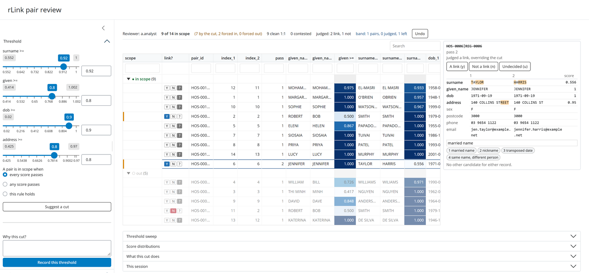
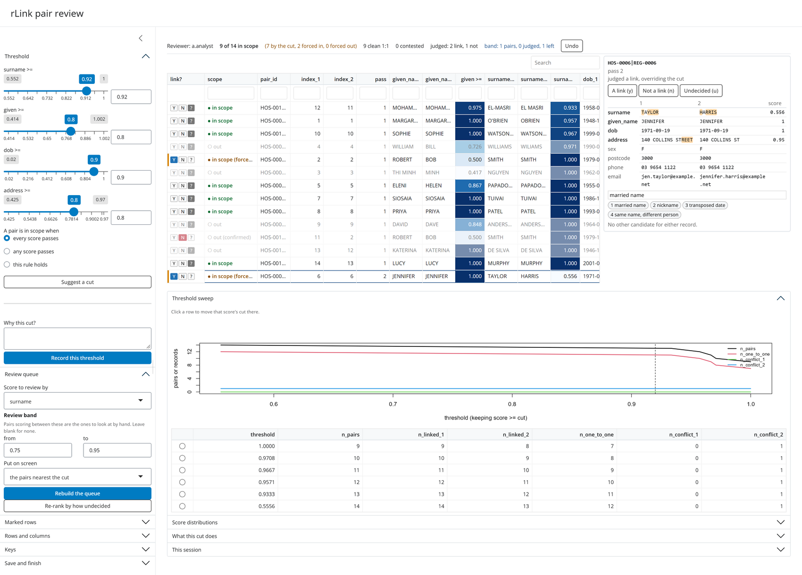

pairs <- rLink(hospital, registry, block_1 = ..., compare = ...)
out <- rLink_inspect(pairs) # choose a cut, judge the rest
out # prints the R to reproduce it
pairs <- apply_decisions(pairs, "rLink_decisions.json")10 Clerical review with rLink_inspect()
Chapter 9 ends with a table of scored pairs and a threshold. For the pairs well above the cut and well below it, that is the whole decision. For the pairs near it, it is not a decision at all — it is a coin toss dressed up as a number, and on a person linkage those pairs are where the married names, the nicknames, the twins and the father-and-son-with-the-same-name live.
rLink_inspect() is the step between scoring pairs and believing the result. It opens the candidates in a browser, lets you move the cut and see what moves with it, lets you accept or reject individual pairs against the evidence, and writes every judgement, with a comment, to an append-only JSON file that somebody else can read back, disagree with, and replay.
That file is the point. An afternoon of expert judgement that exists only in the analyst’s head is not a reproducible linkage; the same afternoon written down against stable pair identifiers is.
10.1 A worked example
Two small files, built so that every row on screen is a case a reviewer would actually recognise: a hospital admissions extract and a cancer registry notification file.
hospital <- data.frame(
frame_id = sprintf("HOS-%04d", 1:14),
given_name = c("MARGARET", "ROBERT", "THI MINH", "WILLIAM", "ELENI",
"JENNIFER", "SIOSAIA", "PRIYA", "DAVID", "SOPHIE",
"ROBERT", "MOHAMMED", "KATERINA", "LUCY"),
middle_name = c("MARY", "JOHN", NA, "HENRY", NA, "ANNE", NA, "DEVI",
"ALAN", NA, "JAMES", NA, "MARIA", "GRACE"),
surname = c("O'BRIEN", "SMITH", "NGUYEN", "WILLIAMS", "PAPADOPOULOS",
"TAYLOR", "TUIVAI", "PATEL", "ANDERSON", "WATSON-BROWN",
"SMITH", "EL-MASRI", "DE SILVA", "MURPHY"),
dob = as.Date(c("1948-11-02", "1979-07-23", "1962-03-14",
"1990-06-08", "1955-01-30", "1971-09-19",
"1986-12-01", "1993-04-27", "1964-02-29",
"1999-08-15", "1979-12-23", "1958-05-06",
"1946-10-11", "2001-01-01")),
sex = c("F", "M", "F", "M", "F", "F", "M", "F", "M", "F",
"M", "M", "F", "F"),
address = c("14 HIGH STREET", "9 KING STREET", "88 GYMPIE ROAD",
"3/22 VICTORIA PARADE", "61 CHURCH TERRACE",
"140 COLLINS STREET", "7 LOGAN ROAD", "12 RIVER CRESCENT",
"205 FLINDERS LANE", "4 BEACH AVENUE",
"52 WICKHAM TERRACE", "77 STANLEY COURT",
"16 FOREST DRIVE", "31 PARK PLACE"),
postcode = c("3121", "4000", "4032", "3065", "3181", "3000", "4102",
"3122", "3000", "3182", "4059", "3053", "3124", "3072"),
phone = c("0412 345 678", "07 3210 4455", "0433 221 900",
"03 9417 8820", "0400 112 334", "03 9654 1122",
"0455 909 118", "0421 773 640", "03 9600 7001",
"0477 310 225", "0455 882 017", "03 9347 5512",
"0402 660 118", "0466 201 773"),
email = c("m.obrien@example.com", "rob.smith@example.net",
"minh.nguyen@example.com", "w.williams@example.org",
"eleni.p@example.com", "jen.taylor@example.net",
"s.tuivai@example.com", "priya.patel@example.com",
"d.anderson@example.org", "sophie.wb@example.com",
"robert.smith79@example.net", "m.elmasri@example.com",
"k.desilva@example.com", "lucy.murphy@example.net"),
stringsAsFactors = FALSE
)
registry <- data.frame(
frame_id = sprintf("REG-%04d", 1:13),
given_name = c("MARGARET", "BOB", "MINH", "BILL", "HELEN", "JENNIFER",
"SIOSAIA", "PRIYA", "DAVE", "SOPHIE", "MOHAMED",
"KATERINA", "LUCY"),
middle_name = c("MARY", NA, NA, "HENRY", NA, NA, "PAULO", "DEVI", NA,
"ROSE", NA, NA, "GRACE"),
surname = c("OBRIEN", "SMITH", "NGUYEN", "WILIAMS", "PAPADOPOULOS",
"HARRIS", "TUIVAI", "PATEL", "ANDERSON", "WATSON BROWN",
"EL MASRI", "DE SILVA", "MURPHY"),
dob = as.Date(c("1948-11-02", "1979-07-23", "1962-03-14",
"1990-06-08", "1955-01-30", "1971-09-19",
"1986-12-01", "1993-04-27", "1964-02-29",
"1999-08-15", "1958-05-06", "1946-11-10",
"2001-01-01")),
sex = c("F", "M", "F", "M", "F", "F", "M", "F", "M", "F", "M",
"F", "U"),
address = c("14 HIGH ST", "9 KING ST", "88 GYMPIE RD",
"22 VICTORIA PDE", "61 CHURCH TCE", "140 COLLINS ST",
"7 LOGAN RD", "12 RIVER CRES", "19 SWANSTON ST",
"4 BEACH AVE", "77 STANLEY CT", "16 FORREST DR",
"31 PARK PL"),
postcode = c("3121", "4000", "4032", "3065", "3181", "3000", "4102",
"3122", "3000", "3182", "3053", "3124", "3072"),
phone = c("0412 345 678", "07 3210 4455", "", "03 9417 8820",
"0400 112 334", "03 9654 1122", "0455 909 118",
"0421 773 640", "03 9600 7001", "0477 310 225",
"03 9347 5512", "0402 660 118", "0466 201 773"),
email = c("m.obrien@example.com", "rob.smith@example.net", "",
"w.williams@example.org", "eleni.p@example.com",
"jennifer.harris@example.net", "s.tuivai@example.com",
"priya.patel@example.com", "", "sophie.wb@example.com",
"m.elmasri@example.com", "k.desilva@example.com",
"lucy.murphy@example.net"),
stringsAsFactors = FALSE
)Block on the surname code and the year of birth, so a wrong day or month cannot hide a pair, with a second pass on the full date so that a married name is still reachable. Then score the fields separately: a clerical reviewer needs to see which field disagreed, not one number.
pairs <- rLink(
hospital, registry,
block_1 = list(name_year = list(soundex(surname), format_date(dob, "y")),
dob_only = dob),
compare = list(surname = jaro_winkler(surname),
given = jaro_winkler(given_name),
dob = date_compare(dob),
address = jaro_winkler_tokens(address)),
keep = c("given_name", "surname", "dob", "sex", "address", "postcode",
"phone", "email"),
block_key = FALSE
)
pairs[, c("pair_id", "given_name_1", "given_name_2", "surname_1",
"surname_2", "surname", "given", "dob", "address")] pair_id given_name_1 given_name_2 surname_1 surname_2
<char> <char> <char> <char> <char>
1: HOS-0001|REG-0001 MARGARET MARGARET O'BRIEN OBRIEN
2: HOS-0002|REG-0002 ROBERT BOB SMITH SMITH
3: HOS-0003|REG-0003 THI MINH MINH NGUYEN NGUYEN
4: HOS-0004|REG-0004 WILLIAM BILL WILLIAMS WILIAMS
5: HOS-0005|REG-0005 ELENI HELEN PAPADOPOULOS PAPADOPOULOS
6: HOS-0006|REG-0006 JENNIFER JENNIFER TAYLOR HARRIS
7: HOS-0007|REG-0007 SIOSAIA SIOSAIA TUIVAI TUIVAI
8: HOS-0008|REG-0008 PRIYA PRIYA PATEL PATEL
9: HOS-0009|REG-0009 DAVID DAVE ANDERSON ANDERSON
10: HOS-0010|REG-0010 SOPHIE SOPHIE WATSON-BROWN WATSON BROWN
11: HOS-0011|REG-0002 ROBERT BOB SMITH SMITH
12: HOS-0012|REG-0011 MOHAMMED MOHAMED EL-MASRI EL MASRI
13: HOS-0013|REG-0012 KATERINA KATERINA DE SILVA DE SILVA
14: HOS-0014|REG-0013 LUCY LUCY MURPHY MURPHY
surname given dob address
<num> <num> <num> <num>
1: 0.9571429 1.0000000 1.00000000 0.9407407
2: 1.0000000 0.5000000 1.00000000 0.9407407
3: 1.0000000 0.4166667 1.00000000 0.9666667
4: 0.9708333 0.7261905 1.00000000 0.9074074
5: 1.0000000 0.8666667 1.00000000 0.9284848
6: 0.5555556 1.0000000 1.00000000 0.9500000
7: 1.0000000 1.0000000 1.00000000 0.9600000
8: 1.0000000 1.0000000 1.00000000 0.9666667
9: 1.0000000 0.8483333 1.00000000 0.4833333
10: 0.9666667 1.0000000 1.00000000 0.9611111
11: 1.0000000 0.5000000 0.02915728 0.4275794
12: 0.9333333 0.9750000 1.00000000 0.9571429
13: 1.0000000 1.0000000 0.50000000 0.9355556
14: 1.0000000 1.0000000 1.00000000 0.9466667Fourteen candidates, and no threshold settles them. Look at what is there:
-
HOS-0006 | REG-0006— JENNIFER TAYLOR against JENNIFER HARRIS. Everything agrees except the surname, which scores 0.556. A married name, and no comparator will ever say so. -
HOS-0002 | REG-0002— ROBERT SMITH against BOB SMITH. The given name scores 0.5 and the pair is a link anyway. -
HOS-0011 | REG-0002— ROBERT SMITH against BOB SMITH again, but the hospital’s other Robert Smith: born five months earlier, in a different suburb, on a different phone. The two name scores are identical to the pair above — 1.000 and 0.500 — so on names alone these two pairs cannot be told apart, and whichever rule accepts one accepts the other. -
HOS-0004 | REG-0004— WILLIAM HENRY WILLIAMS against BILL HENRY WILIAMS: a nickname and a typo at once.
A cut on the name scores that accepts the second of those accepts the third. The evidence that separates them — a five-month gap in the date of birth, a different suburb, a different phone — is all on the screen, and none of it is in the one number a threshold reads. That is the problem the rest of this chapter is about.
10.2 Opening the review

Six things on that screen are worth knowing about.
The header counts everything, not what is on screen. 9 of 14 in scope (7 by the cut, 2 forced in, 0 forced out) breaks the total into what the threshold gave and what a person overruled, because those are different kinds of fact and only the second needs defending. 9 clean 1:1 and 0 contested say what the scope does to the records — a record claimed by two links is the failure mode a pair-level precision number hides.
Out of scope rows are dimmed, not hidden. A false negative you cannot see is a false negative you will not find.
The pane on the right is the pair. Compared fields first, each with the value either file held, the score it earned, and what differs between the two values highlighted. In Figure 10.1 the whole of TAYLOR and HARRIS is lit up, because nothing in them matches; on the line below, only the REET of 140 COLLINS STREET is, because the rest survives the abbreviation to 140 COLLINS ST. One dropped letter reads very differently from a different word, and the highlighting is what makes that visible without reading character by character. Then every other carried column, because somebody deciding whether two records are one person reads the address, the phone and the email as well as the fields that happen to have been scored. This is the single reason to pass a generous keep to rLink() when a review is coming.
Below the fields: the other candidates for the same two records. Whether a pair is a link is rarely a question about that pair alone; it is whether it is the best candidate its records have. Each rival is one click away, and where there are none the pane says so — “No other candidate for either record”, which is itself worth knowing, and is what Figure 10.1 reports for this pair. For HOS-0011 | REG-0002 it would instead list HOS-0002 | REG-0002, which is the entire basis for rejecting it.
A judgement beats the threshold, both ways. The cut decides the pairs nobody looks at. Marking a pair a link brings it into scope though its scores failed; marking one not a link takes it out though they passed. That is what a threshold is for — a way of not having to look at a million pairs, not a verdict. In Figure 10.1 the JENNIFER TAYLOR / HARRIS pair carries an orange marker down its left edge and the pane says judged a link, overriding the cut.
The stock reasons are bound to the number keys. 1 files “married name” as the comment on the pair in focus. Over a few thousand verdicts that is the difference between comments that get written and comments that do not.
10.3 Choosing the cut
One slider and one numeric box per score, kept in step, so a cut can be dragged or typed exactly. Beyond all and any, a rule can be written out — surname >= 0.9 | (surname >= 0.8 & given >= 0.95) — checked as you type, stored with the threshold, and re-applied by apply_decisions().

The Threshold sweep panel answers the question a threshold is actually about. For every candidate cut-off of one score it reports how many pairs survive, how many records each side links, how many links are cleanly one-to-one, and how many records end up contested — claimed by more than one link. You almost never know the truth; you always know when a cut-off starts producing records that two different people claim.
The same evidence is available at the console, which is where it belongs for a scripted run:
threshold_sweep(pairs, "surname")[
, c("threshold", "n_pairs", "n_one_to_one", "n_conflict_1", "n_conflict_2")] threshold n_pairs n_one_to_one n_conflict_1 n_conflict_2
1 1.0000000 9 7 0 1
2 0.9708333 10 8 0 1
3 0.9666667 11 9 0 1
4 0.9571429 12 10 0 1
5 0.9333333 13 11 0 1
6 0.5555556 14 12 0 1Read the n_conflict_2 column: it is 1 at every cut-off, including the strictest. REG-0002 is claimed by both Robert Smith pairs, and both score a flat 1.000 on surname, so no cut on this score will ever separate them — tightening it only throws away good links while the conflict survives. The sweep says that without being told the answer, and what it is saying is stop moving this slider and go and look.
Suggest a cut reads that sweep and proposes the last cut-off that buys more clean one-to-one links than it does contested records, and says so in a sentence. Clicking a row of the sweep table moves that score’s cut there, so the evidence and the control are the same object.
Which score the sweep is about is chosen in the sidebar. That matters: it is the second and third fields, not the first, where a reviewer has least idea where the cut belongs.
10.4 Which pairs to look at
A threshold is a way of not having to look at every pair. Three features are about choosing which ones to look at instead.
The review band is a range of one score — band = c(0.75, 0.95) above, or the two boxes in the sidebar — inside which a cut cannot be trusted and a person has to look. The header counts the pairs in it, how many have been judged and how many are left, which is the review’s progress bar. Show > in the review band, undecided lists what is left. The cut still decides any pair nobody gets to.
The queue is the max_pairs pairs put on screen (20,000 by default), chosen by review_order(). It opens as the pairs nearest the cut — the ones a threshold cannot settle — and Rebuild the queue draws it again around the cut as it now stands, or around the band, or as an audit sample. Pairs already judged stay in it wherever the cut has gone.
# The same ordering at the console: the pairs a cut of 0.92 on the surname
# settles least confidently come first, and the settled ones come last.
pairs$pair_id[review_order(pairs$surname, threshold = 0.92)] [1] "HOS-0012|REG-0011" "HOS-0001|REG-0001" "HOS-0010|REG-0010"
[4] "HOS-0004|REG-0004" "HOS-0002|REG-0002" "HOS-0003|REG-0003"
[7] "HOS-0005|REG-0005" "HOS-0007|REG-0007" "HOS-0008|REG-0008"
[10] "HOS-0009|REG-0009" "HOS-0011|REG-0002" "HOS-0013|REG-0012"
[13] "HOS-0014|REG-0013" "HOS-0006|REG-0006"Note where the married-name pair lands: last. It is 0.36 below the cut, so by distance it is the most settled pair in the file — and it is also the one the cut gets most wrong. Distance from a cut is a good way to find the pairs a threshold cannot settle; it is not a way to find the pairs a threshold settles wrongly. That is what the review band and the audit sample are for.
The audit sample answers the other question a linkage is always asked: of the pairs the cut lets through unseen, how many are wrong? It is a fixed sample of them — the ones whose identifiers hash smallest, so it is the same sample whoever opens the review, and drawing it does not disturb the random number stream. Judge it and the header estimates the false-link rate with a 95% interval.
The band and the audit are both filed alongside a recorded threshold, because “0.82” and “0.82, having looked at everything between 0.75 and 0.95 and found three wrong links in a sample of 200” are different claims.
10.5 Judging pairs
Three buttons and a comment box on every row, and the same on the pair beside the table. Ctrl-click (cmd-click) marks rows, shift-click marks a range, and the marked set is judged in one action — which is how a block of obvious links is dealt with without 200 clicks. Marks follow the pair, not the row position, so they survive sorting, filtering and paging.
The whole review can be done from the keyboard, which is most of what makes a few thousand verdicts bearable:
| Key | |
|---|---|
j k, or the arrows |
the next and the previous pair, turning the page at either end |
y n
|
a link, not a link — then on to the next pair nobody has judged |
u |
undecided again |
x |
mark or unmark the pair in focus |
c |
write a comment (Esc to come back) |
1 to 9
|
file one of the stock reasons as the comment |
Ctrl+Z |
take the last action back |
? |
show this list |
Taking an action back is itself recorded. The log is append-only, and a verdict reached and then withdrawn is a different history from one never reached. A comment is saved as it is typed, so closing the tab loses nothing.
Because an override is a decision somebody has to defend, it is reported as one rather than folded into the total: the scope cell says forced in or forced out where the judgement contradicts the cut and confirmed where it agrees (both visible in Figure 10.2); those rows carry a marker down their left edge; the header breaks the total into what the cut gave and what was forced either way; and Show > overriding the cut lists exactly that set — which is the page to re-read before a linkage is signed off.
10.6 What gets written
Closing with Finish and close returns a read_decisions() object, so out holds the whole review. The same file can be read back at any time by anyone:
# This chapter cannot click anything, so here is the file as it stands the
# moment the review opens: the run recorded, the opening cut recorded, and
# nobody has judged a pair yet. `launch = FALSE` is what makes that
# reproducible -- the file is written either way.
review_file <- file.path(tempdir(), "cancer_registry_review.json")
unlink(c(review_file, paste0(review_file, ".bak")))
invisible(rLink_inspect(
pairs, decisions = review_file, reviewer = "a.analyst",
threshold = c(surname = 0.92, given = 0.80, dob = 0.90, address = 0.80),
band = c(0.75, 0.95), launch = FALSE,
reasons = c("married name", "nickname", "transposed date",
"same name, different person")))held <- read_decisions(review_file)
held── Pair decisions ──────────────────────────────────────────────────────────────
File: C:/Users/kyleh/AppData/Local/Temp/Rtmpi4YLwo/cancer_registry_review.json
1 session, 0 decision events
Sessions
reviewer started n_pairs n_shown truncated
a.analyst 2026-11-12T19:19:02.917Z 14 14 FALSE
Thresholds accepted
2026-11-12T19:19:02.917Z by a.analyst: surname >= 0.92 & given >= 0.8 & dob >= 0.9 & address >= 0.8
Given to rLink_inspect() when the review was opened.
── Put this in your script ─────────────────────────────────────────────────────
# Re-open this review, decisions and all:
rLink_inspect(pairs, decisions = "C:/Users/kyleh/AppData/Local/Temp/Rtmpi4YLwo/cancer_registry_review.json")
# Apply it, adding `link` and `link_reason` columns:
pairs <- apply_decisions(pairs, "C:/Users/kyleh/AppData/Local/Temp/Rtmpi4YLwo/cancer_registry_review.json")A read_decisions() object holds four things, and each is there for a different reader:
$runs — one row per review session: who, when, on what data, with which package and R version, and a fingerprint of the pair set and the scores. If the data has moved under a set of decisions, this is what says so.
$thresholds — every cut that was accepted, with the note the reviewer typed, the rule in force, and the effect it had (pairs, clean one-to-one links, contested records on each side). A threshold with a reason attached is an audit trail; a threshold in a script is a magic number.
$decisions — one row per reviewer per pair: the verdict, the comment, and the scores the pair had at the moment it was judged. That last part matters when the comparators are later changed.
$disagreements — where two reviewers judged the same pair differently. This is the whole reason the file is append-only: a second reviewer’s session is added to it, never written over it. Reopening a file restores your own verdicts and comments, and shows another reviewer’s against each pair without filling them in for you — a QA pass that opens pre-answered is not a check.
Printing the object ends with the R needed to reproduce and apply exactly these decisions, ready to paste into the script.
Applying them
decided <- apply_decisions(pairs, review_file)
decided[, c("pair_id", "surname", "given", "link", "link_reason")] pair_id surname given link link_reason
<char> <num> <num> <lgcl> <char>
1: HOS-0001|REG-0001 0.9571429 1.0000000 TRUE threshold
2: HOS-0002|REG-0002 1.0000000 0.5000000 FALSE below threshold
3: HOS-0003|REG-0003 1.0000000 0.4166667 FALSE below threshold
4: HOS-0004|REG-0004 0.9708333 0.7261905 FALSE below threshold
5: HOS-0005|REG-0005 1.0000000 0.8666667 TRUE threshold
6: HOS-0006|REG-0006 0.5555556 1.0000000 FALSE below threshold
7: HOS-0007|REG-0007 1.0000000 1.0000000 TRUE threshold
8: HOS-0008|REG-0008 1.0000000 1.0000000 TRUE threshold
9: HOS-0009|REG-0009 1.0000000 0.8483333 FALSE below threshold
10: HOS-0010|REG-0010 0.9666667 1.0000000 TRUE threshold
11: HOS-0011|REG-0002 1.0000000 0.5000000 FALSE below threshold
12: HOS-0012|REG-0011 0.9333333 0.9750000 TRUE threshold
13: HOS-0013|REG-0012 1.0000000 1.0000000 FALSE below threshold
14: HOS-0014|REG-0013 1.0000000 1.0000000 TRUE thresholdNobody judged anything in this file, so every verdict above is the recorded threshold’s — and it is worth reading as an indictment of thresholds. Seven of the fourteen are refused, and six of those seven are true links:
| Pair | Refused on | What it really is |
|---|---|---|
HOS-0002 REG-0002 |
given 0.50 |
ROBERT / BOB — a nickname |
HOS-0003 REG-0003 |
given 0.42 |
THI MINH / MINH — a dropped name element |
HOS-0004 REG-0004 |
given 0.73 |
WILLIAM / BILL, and a typo in the surname |
HOS-0006 REG-0006 |
surname 0.56 |
TAYLOR / HARRIS — a married name |
HOS-0009 REG-0009 |
address 0.48 |
they moved |
HOS-0013 REG-0012 |
dob 0.50 |
1946-10-11 / 1946-11-10 — transposed |
HOS-0011 REG-0002 |
dob 0.03, address 0.43, given 0.50 |
correctly refused: a different Robert Smith |
Every one of the six mistakes has the same shape: a single field disagrees for a reason that is not evidence against identity, and every other field agrees. The one correct refusal is right for a good reason — two other fields, the date of birth and the address, carry evidence the names do not.
And that is the trap. The obvious fix is to loosen the given cut, but HOS-0002 | REG-0002 (a link) and HOS-0011 | REG-0002 (not one) score identically on both name fields — 1.000 and 0.500. No cut on a name score can ever accept the first and refuse the second. Separating them has to come from somewhere else: another field, a weight that combines them (Section 10.8), or a person.
apply_decisions() resolves the threshold and the per-pair judgements in the same order the app displayed them: the recorded threshold decides every pair nobody looked at, and a per-pair verdict overrides it either way. The counts on screen are therefore the counts the next run produces — a reviewer can include a pair the cut threw out and watch the header agree with them.
It adds a link column and a link_reason saying why each pair is or is not a link: the threshold, or a named reviewer’s verdict.
10.7 Why pair_id decides whether any of this survives
Decisions are filed against pair_id. They find their pairs again after rLink() is re-run with different blocking if and only if pair_id was built from record identifiers rather than row numbers.
# The same two files, blocked completely differently
again <- rLink(hospital, registry,
block_1 = list(list(soundex(given_name), postcode)),
compare = list(surname = jaro_winkler(surname),
given = jaro_winkler(given_name)),
keep = character())
c(first_run = nrow(pairs), second_run = nrow(again),
shared_ids = length(intersect(pairs$pair_id, again$pair_id)),
married_name_pair_still_named =
"HOS-0006|REG-0006" %in% intersect(pairs$pair_id, again$pair_id)) first_run second_run
14 8
shared_ids married_name_pair_still_named
8 1 The second run finds a different, smaller set of candidates, and the pairs it shares with the first still carry the same names. So the verdict “married name, this is a link”, recorded against HOS-0006|REG-0006, still finds its pair. Row numbers would not have survived: index_1 and index_2 mean whatever the inputs happened to contain that day.
The app says so itself when it cannot promise this: open it on pairs whose pair_id is a sequence number and a banner appears saying the decisions will not find their pairs again. If you intend to review a linkage, give rLink() a pair_id — see Section 9.5.
10.8 Weights, and reviewing on one number instead of five
With rLink_weights() the cut is on the match probability alone, the field scores become the evidence behind it, and the pair pane also reports how many bits each field contributed to the weight. For a linkage with six or eight comparators that is a far easier review: one slider, and an explanation per pair of where the number came from.
pair_id surname given dob weight probability
<char> <num> <num> <num> <num> <num>
1: HOS-0006|REG-0006 0.5555556 1 1.0 64.31631 1
2: HOS-0013|REG-0012 1.0000000 1 0.5 63.50895 1
3: HOS-0001|REG-0001 0.9571429 1 1.0 35.26695 1
4: HOS-0010|REG-0010 0.9666667 1 1.0 35.26695 1
5: HOS-0007|REG-0007 1.0000000 1 1.0 33.36006 1Fourteen pairs is far too few to fit a Fellegi-Sunter model — every probability here comes out at 1, which is what overfitting looks like, and Chapter 9 fits one on 34,000 candidates instead. But the ordering is already saying something true: the married-name pair ranks first. The model has worked out from the data that surname disagreement is common among matches and that agreement on everything else is rare among non-matches, which is precisely the judgement a reviewer makes by hand in Figure 10.1.
10.9 Running it without a browser
launch defaults to interactive(), so the decisions file is still written — and an unwritable path still fails loudly — when the call is made from a script or a test. With launch = FALSE the shiny.appobj comes back invisibly, to be run or inspected later.
[1] "shiny.appobj"basename(list.files(tempdir(), pattern = "qa.json$", full.names = TRUE))[1] "qa.json"The file is written as soon as the app is built, with the opening threshold if one was given, so a bad path is an error now rather than after an hour of review, and the file records that this data was opened even if nothing was decided.
10.10 Argument reference
| Argument | What it is for |
|---|---|
x |
Candidate pairs: an rLink() result, or any frame with index_1/index_2 or x_index/y_index. |
decisions |
Path to the JSON file. Read and appended to when it exists, created when it does not. |
reviewer |
Who is reviewing. Defaults to the logged-in user; every decision is attributed to it. |
scores |
Score columns to threshold. NULL reads them from attr(x, "compare"). |
threshold |
Named starting cuts, e.g. c(surname = 0.92). Recorded in the file as an accepted threshold. |
band |
Review band on the first score: the range a person has to look at. |
reasons |
Up to nine stock comments, bound to the number keys. |
max_pairs |
Most rows on screen, 20000 by default. Every count is still computed over all pairs. |
page_size |
Rows per page, 5 to 1000. |
order_by |
"review" (nearest the cut first), "score", or "input". |
font_size |
Base font in pixels, adjustable in the app. |
launch |
Whether to run the app. Defaults to interactive(). |
Limits worth knowing
At most max_pairs rows go on screen; the analysis still reads every pair, and the app says so. reactable draws every row of a page, so page_size is capped at 1000 — there is deliberately no “show all rows”, because at these sizes it would lock the browser tab rather than show you anything. The threshold sweep is drawn over at most 200 cut-offs, placed at quantiles of the score once it has more distinct values than that. Columns are reordered and hidden by dragging them between the Shown and Hidden lists in the sidebar, because reactable cannot drag a table header.
The app needs shiny, reactable, jsonlite, bslib and sortable, all of which are Suggests.
10.11 See also
-
Chapter 9 — producing the pairs, and why
pair_idand a generouskeepmatter before a review. -
read_decisions()— reading the file back;apply_decisions()— applying it. -
threshold_sweep()— the sweep at the console. -
review_order()— the ordering the queue uses. -
rLink_weights()— a single match probability to review on.